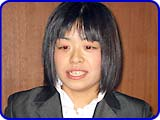

|
 |
 |
|
２．
 メインストーリーは、どーもくんがテレビのアンテナのかけらを集めていくというものですよね。あのお話は最初からあったんですか。 メインストーリーは、どーもくんがテレビのアンテナのかけらを集めていくというものですよね。あのお話は最初からあったんですか。
［平田］ ええ、最初からありました。でも、その後は１つ１つの番組を作るのに必死だったんです。山上さんに「そろそろメインのお話をください」と言われ、あわててたたき台のサンプルシナリオを書いて、合田さんに仕上げをお願いしたんですよ。
ということは、メインのストーリーは合田さんが書いたんですか。
［米澤］ そうですね。ゲームの途中で短いストーリーが挿入されるんですが、そのコンテも合田さんに切ってもらいました。
合田さんはまさかコンテまで切るとは思わなかったんじゃないでしょうか。
［合田］ 監修はしていますけれど、直接ゲームに関わることは、おそらくないだろうと思っていました。
［平田］ でも、合田さんの企画したゲームも１本入ってるんですよ。一番最初に遊べる「自然スペシャル 鳥の成長」は合田さんの企画です。
［合田］ 僕もいろいろとゲームの企画を出したんですが、「これはめちゃくちゃですよ」「これはゲームになりません」と言われ続けていました。その中で「鳥の成長」を作ってもらって、もうめちゃくちゃうれしかったですね（笑）。
それ以外の番組は平田さんが全部考えたんですか？
［米澤］ チームメンバーが考えたものもいくつかありますが、ほとんどは平田ですね。
［田島］ 番組数は30番組で、そのうち21種類がゲームです。
［平田］ 野球や料理など、実際にありそうな番組を作ってみました。料理のレシピはティー・ワイ・オーの松本さんなんですよ。料理のゲームシステム自体はすぐにできたんですが、レシピは苦労していたみたいですね。
［松本］ 朝食や夕食にどういったものを食べるかというアイデアを出しました。レシピが上がるのは遅かったですね。私のレシピは手を使うものが多すぎるから、もう少し器具を使ってください、と言われたりして（笑）。
ほかに苦労した番組はどれですか。
［山上］ 「どーもオープン ゴルフ」じゃないでしょうか？ 最初にもらったゴルフの企画は、ゴルフボールがどーもくんになって飛んでいくというものだったんです。ボールをコントロールできてしまうとゴルフではなくなるので、そこは「直してください」と。
［平田］ 僕としてはどーもくんがボールになるというアイデアにずっとこだわっていたんですよ。それで、あの手この手で通そうと考えたんですがやはりダメで（笑）、最後は普通のパターゴルフになりました。
［山上］ でも、結果としてすごくいいゲームになりましたよね。
ええ、ゴルフ、おもしろいですよ。田島さんはどんな役割をしていたんですか。
［田島］ みなさんの提案を聞いて、横やりを入れる係ですね（笑）。
［山上］ 田島にはアシスタントという立場で仕事をしてもらったんですが、彼女は学生時代からのゲーム好きで、実にいろいろなゲームを知っているんですよ。そこで、ユーザーの立場からどんどん意見を言ってもらいました。
［平田］ 山上さんがかたくなに「ダメだ」と言っているところを、中立の立場から「こういういいところもありますよ」と引き戻してくれましたよね。僕たちも助かりました。
［山上］ 僕もこの仕事が長いですから、どうしても業界的な立場でものを言うことが多くなるんです。ですから、彼女のプレイヤーとしての意見が貴重でしたね。
合田さんはゲーム中のキャラクターの監修もされたと思うのですが、どーもくんはシンプルなデザインだけに、形が少し違うだけでイメージが変わってきそうですね。
［米澤］ 今回は最初に３Ｄでキャラクターのモデルを作って、それを２Ｄに落としているんですが、その３Ｄのキャラクターを見せた時点で、合田さんのチェックが入りまして。うちのデザイナーは少し苦労していたみたいですね。
［合田］ どーもに関しては目の位置とかでかなり印象が変わってくるので、そこを直してもらうのと、あとはゲーム中の演出ですよね。どーものリアクションとして不自然なものは直してもらったので、平田さんは大変だったと思います。
どーもくんにこんなゲームをやらせてはいけないというタブーはあったんですか。
［合田］ いえ、特にはなかったんですよ。唯一あったのが、洋服を着せることですね。コスプレはイヤだ、と（笑）。テレビという日常生活とは違う世界に入っていくゲームなので、それぞれのテレビ番組らしさが出ていればだいじょうぶだと思っていました。そういう意味では、キャラクターの動き以外での大きな要望はなかったですね。
|

|
|
 |
|
 |
 |
 |
|
|